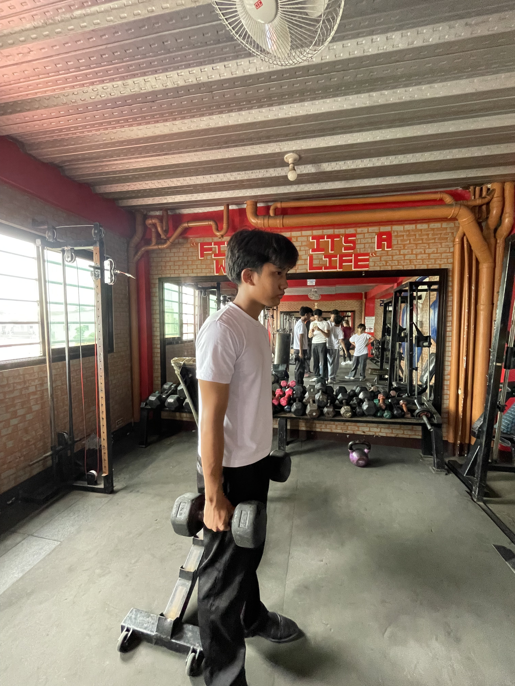
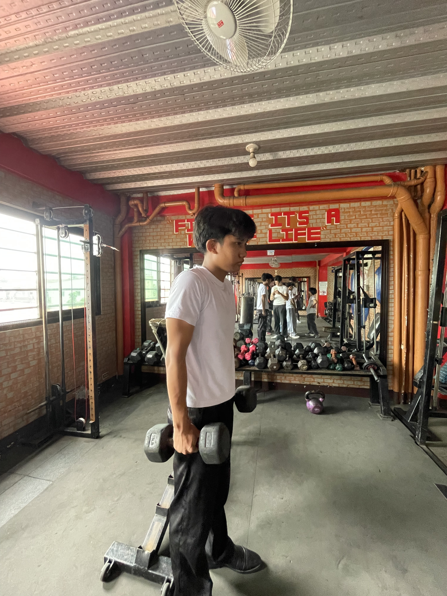
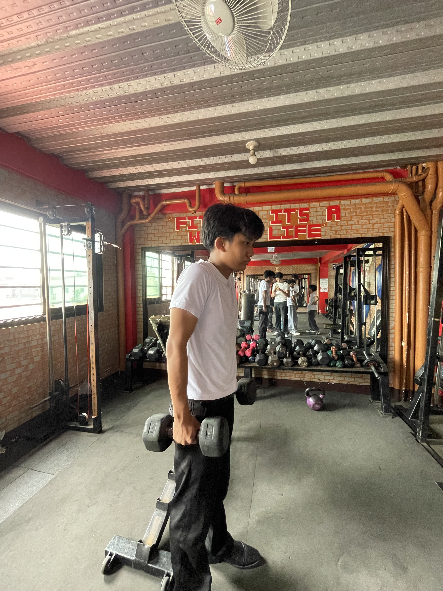
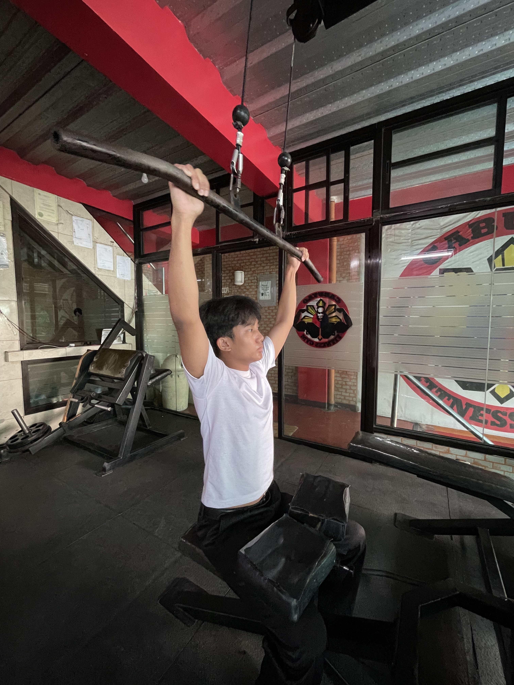
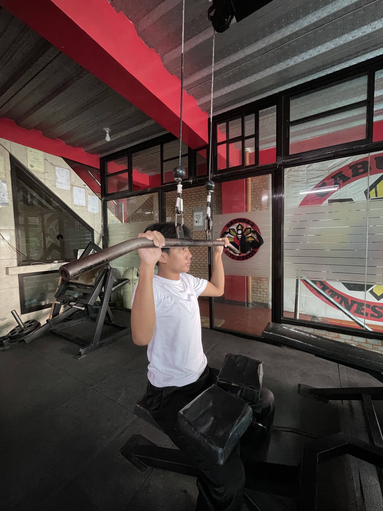
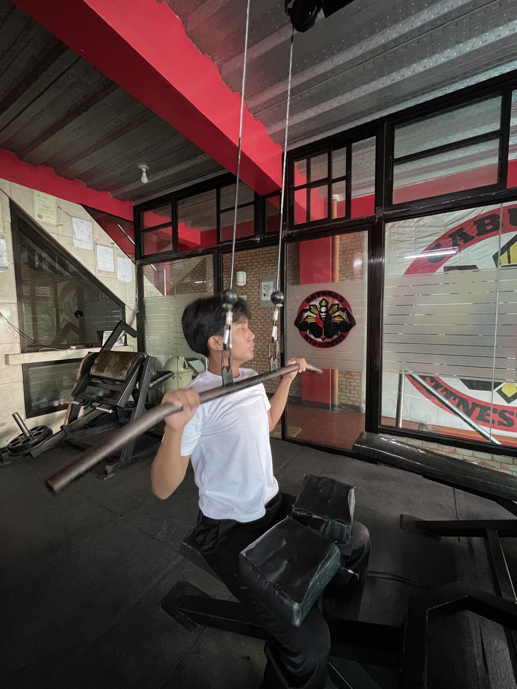
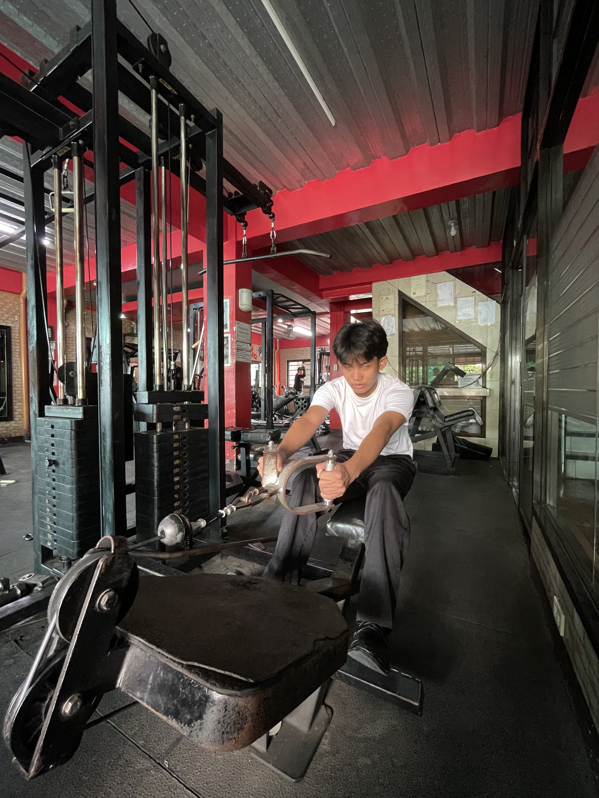
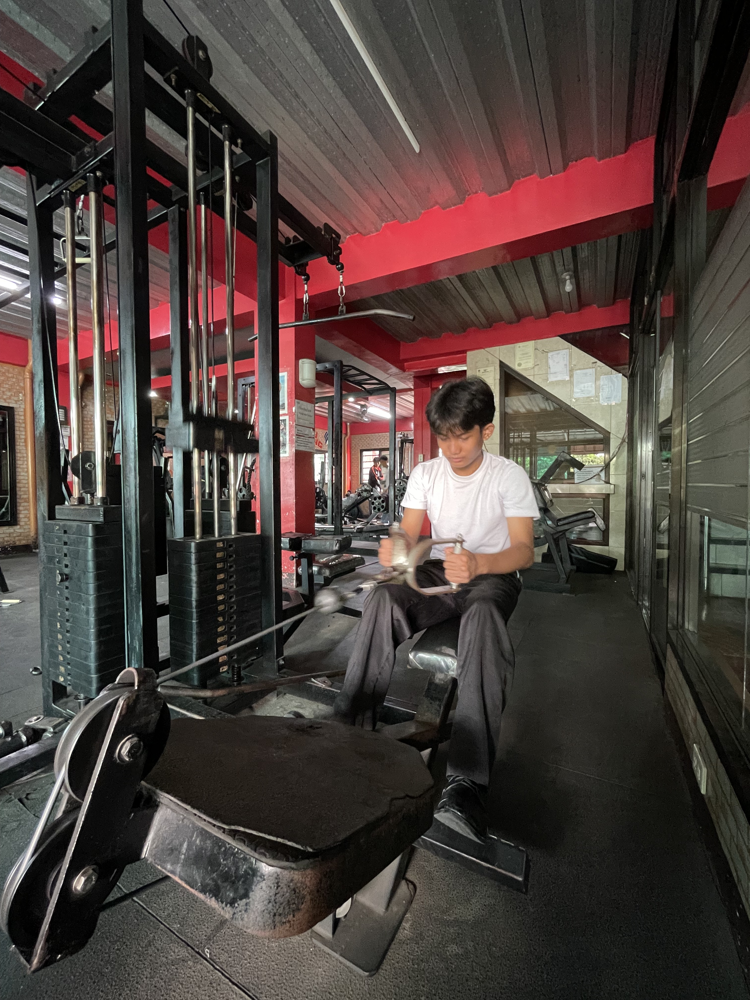
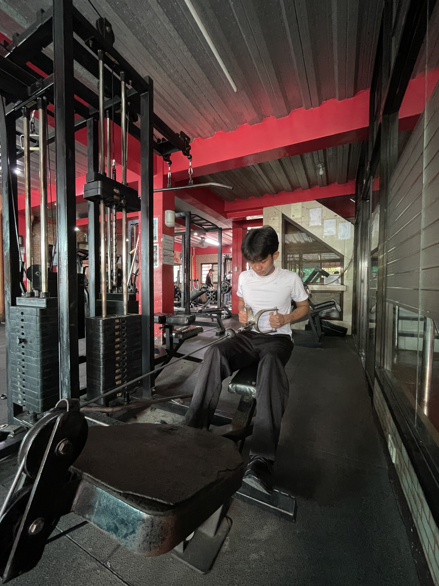

SHRUGS



Shrugs are an exercise that targets the upper trapezius muscles. They are commonly performed with a barbell or dumbbells and are effective for building shoulder width and improving posture.
LAT PULL DOWN



The lat pull down is an exercise that targets the latissimus dorsi muscles. It is commonly performed on a machine and is effective for building width in the back and improving posture.
CABLE ROW



The cable row is an exercise that targets the middle and lower back muscles. It is commonly performed on a cable machine and is effective for building back width and thickness.